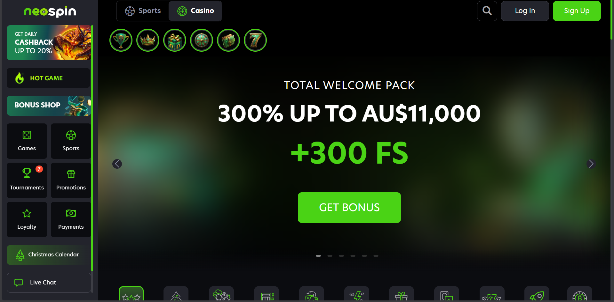
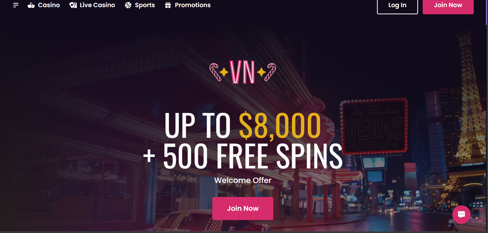
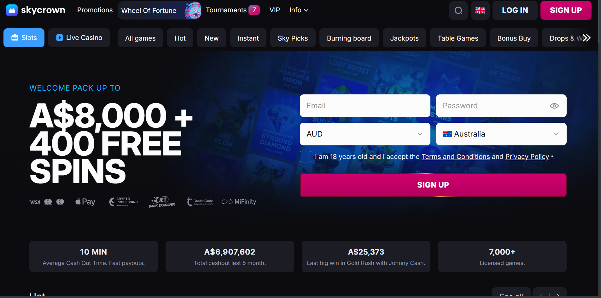
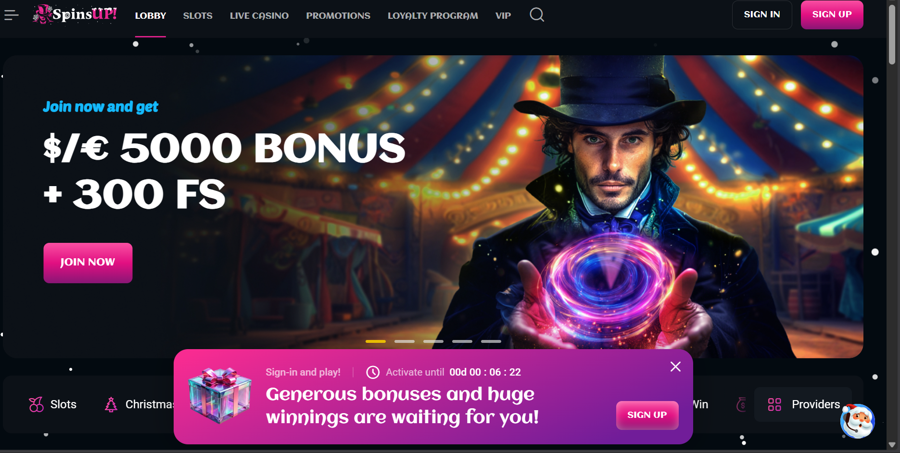
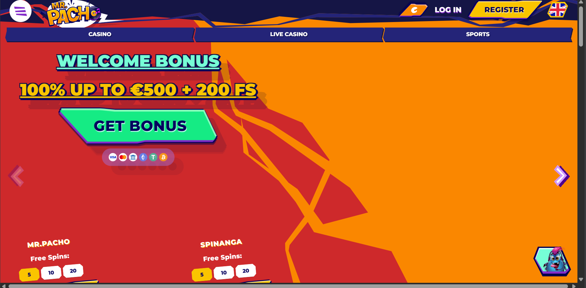
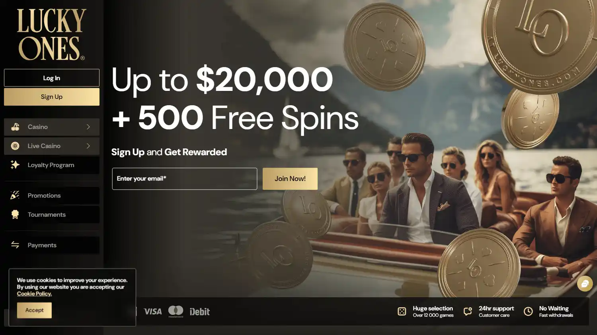
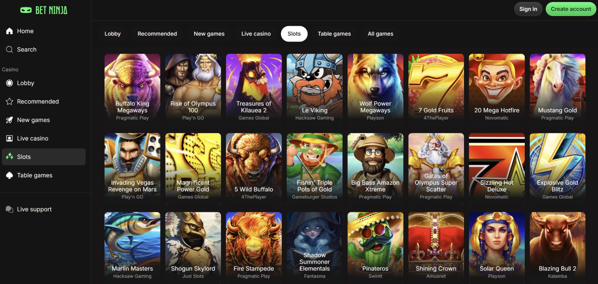
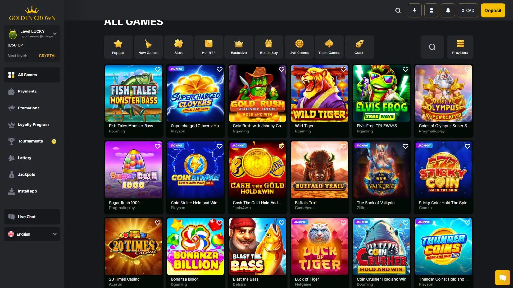
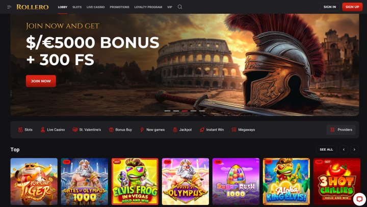

Best Overall for Real Money Pokies
Up to AU$11,000 + 300 FS
PayID, Cards, E-wallets, Crypto
Curaçao, SSL
The key to locating the best online casino in Australia in 2025 begins with understanding what Aussies desire: real-money pokies with good payouts, quick AUD withdrawals, and PayID deposits that appear immediately.
Since the Interactive Gambling Act prevents local operators from offering online casinos, Australians often turn to licensed offshore providers that operate legally and offer a wider range of pokies, table games, and live dealers. This guide puts safety first. All listed casinos are verified for licensing, secure banking, fair gambling, and responsible gambling tools.
You’ll see which platforms pay out fastest, offer the best pokies libraries, and deliver the most substantial bonuses and live casino experiences.
This table gives a quick overview of bonuses, game strength, and ratings so you can spot the top Australian casinos at a glance.
These reviews break down how each casino performs in real-world testing, covering pokie quality, payout speed, safety standards, and bonuses. Every site listed here accepts Aussies and supports fast, secure AUD banking.

NeoSpin sits at the top because it does the basics well: a massive pokies lineup, bonuses that are actually clear, and withdrawals that don’t drag on for days. For most Australian players, that mix is hard to beat.
You get thousands of pokies from Pragmatic Play, BGaming, Play’n GO, and other long-time favourites. The layout is clean, and mobile sessions feel smooth even when you jump between games. Crash titles and a straightforward live casino section round out the offering if you want something other than reels.
NeoSpin operates under a Curaçao licence and maintains transparency. RTP figures, game restrictions, and bonus rules are easy to find. Larger withdrawals trigger standard KYC checks, but nothing out of the ordinary. Encryption and account protection are solid.
The welcome deal lands in four steps:
High rollers get a 125% bonus plus weekly cashback. Regular players receive daily cashback ranging from 5% to 20%. There are free spins on Wednesdays, a weekend reload, and a 16-level VIP ladder with real rewards. Most offers require 40x wagering and a low maximum bet limit.
Visa, Mastercard, MiFinity, and a long list of cryptocurrencies (BTC, ETH, USDT, LTC, DOGE, XRP, BCH) are accepted here. Deposits are instant. Crypto withdrawals usually land within minutes. Bank transfers take longer and come with a fee.
Pros:
Cons:
9.9/10
A strong all-round pick for Aussies who want fast payments and plenty to play.

VegasNow blends a generous bonus system with a user-friendly layout that works effortlessly on mobile. It’s built for players who want quick access to games and reliable payout options without confusing menus or gimmicks.
VegasNow appears designed for people who want straightforward entertainment without a cluttered interface. The game lobby loads quickly, and switching between pokies, blackjack, roulette, and specialty titles is simple enough even on mobile.
The site doesn’t push live casino tables heavily, and availability can depend on where you’re playing from, but the RNG collection covers most of what everyday players look for.
The terms are strict, but they’re also refreshingly straightforward. VegasNow allows only one account per person, enforces an 18+ policy, and blocks sign-ups from countries including the USA, the UK, China, Russia, and Syria. Verification is required before withdrawals, so expect to share ID and proof of payment at some point.
They’re also substantial on anti-fraud rules: no VPN shortcuts, no third-party deposits, and no bonus-clearing tricks. If anything looks off, the casino pauses payouts immediately, which is precisely how a real-money site should operate.
The bonus lineup is the biggest draw here. You get:
Wagering is usually 40x, with max bet caps and a seven-day window, so skim the terms before jumping in.
Deposits start from 30 AUD, and crypto users get the simplest experience with BTC, ETH, LTC, DOGE, ADA, XRP, and more. Withdrawals begin at €20, with limits tied to your level and payment type.
Pros:
Cons:
9.8/10
Great for players who enjoy big, structured bonuses and don’t mind reading the fine print.

SkyCrown is the go-to pick for Aussies who want ultra-fast payouts. With PayID withdrawals landing in minutes and a vast game library, it strikes the right balance between choice and convenience.
SkyCrown offers over 6,000 games, including pokies, live roulette, blackjack, baccarat, and niche game shows. Trusted software providers ensure fast loading times and smooth play across desktop and mobile.
Licensed in Curaçao, SkyCrown applies standard SSL encryption and requires ID verification before withdrawals. The focus is on core security essentials rather than advanced extras.
Visa, Mastercard, PayID, MiFinity, and crypto via CoinsPaid. Deposits are instant, with crypto and PayID withdrawals processed fastest.
Pros:
Cons:
9.8/10
A strong option for Aussies who want variety, easy navigation, and quick cashouts.

SpinsUp is built for pokies lovers. Its collection of high RTP titles and well-organized categories makes it easy to navigate when searching for a particular game.
2,500+ titles including high-RTP classics, table games, and live rooms. Advanced filters help players find jackpots or specific game features quickly.
Offshore licensed, SSL encryption, verified RNG software, responsible gambling tools, KYC, and anti-fraud checks.
Visa, Mastercard, Apple Pay, MiFinity, PayID, and crypto (BTC, ETH, LTC, BCH, DOGE, USDT). Crypto withdrawals are fastest.
Pros:
Cons:
9.7/10
Ideal for pokies-first players who value structure and steady bonuses.

Wild Tokyo excels in depth; its catalogue is one of the largest, particularly for table games and specialty titles.
8,000+ games from major studios, including NetEnt, Pragmatic Play, Evolution, and Playtech. Slots dominate but live tables and game shows are included.
Curacao licensed, SSL encrypted, with KYC, self-exclusion, and 24/7 support.
Cards, e-wallets, bank transfers, and crypto. Deposits from €20; withdrawals €20–€50 depending on method.
Pros:
Cons:
9.6/10
Great content and promos, but withdrawal rules are tight.

MrPacho is built for bonus hunters. Missions, events, reloads, and daily perks keep the casino lively even on slower days.
4,000+ games including pokies, Megaways, exclusives, jackpots, instant-win games, and a live casino. Smooth navigation and popular tab for easy selection.
Anjouan licensed, SSL encrypted, RNG games independently tested, and responsible gaming tools including self-exclusion.
Visa, Mastercard, Skrill, Neteller, bank transfer, and crypto. Deposits from AU$30, instant. Withdrawals: e-wallets fastest, cards 1–5 days.
Pros:
Cons:
9.5/10
A bonus-friendly casino that keeps gameplay active without over-complicating the experience.

LuckyOnes offers 14,000+ games with a clean, fast interface. Categories make browsing seamless, and the live section is powered by Pragmatic Play Live.
Slots, jackpots, Megaways, table games, live casino, 90+ studios, and popular titles like Sweet Bonanza and Gates of Olympus.
Curacao licensed, SSL encryption, certified RNG, self-exclusion, and responsible gaming tools. Chatbot handles some support initially.
Visa, Mastercard, Interac, MiFinity, Neosurf, MuchBetter, Jeton, Flexepin, and crypto (BTC, ETH, LTC, XRP, ADA, DOGE, TRON, BCH, USDT). Instant deposits; withdrawals usually < 24h.
Pros:
Cons:
9.4/10
Feature-rich casino built for nonstop content and fast crypto banking.

BetNinja merges casino gaming with a full sportsbook, ideal for players who want both pokies and betting markets under one roof.
2,000+ games from Pragmatic Play, NetEnt, Games Global, Nolimit City, Evolution, Red Tiger, Relax, Wazdan. Slots dominate, but table and live games are available. Filters by provider and category.
Anjouan licensed, SSL encryption, PCI-compliant payments, RNG from certified studios, KYC mandatory, responsible-gambling tools in place.
Visa, Mastercard, Apple Pay, Google Pay, Interac, Revolut, MiFinity, bank transfers, BTC, ETH, LTC, XRP, Tether, DOGE. Deposits instant; withdrawals usually < 24h; crypto fastest.
Pros:
Cons:
9.3/10
Quick, secure, slot-first casino suitable for fast cashouts.

GoldenCrown combines a large game lobby with one of the biggest welcome bonuses in Australia.
~6,500 games: pokies, jackpots, blackjack, roulette, baccarat, video poker, bingo, scratchcards, crash games, and live casino. Providers: Microgaming, NetEnt, Play’n GO, Yggdrasil, Pragmatic Play, Hacksaw, BGaming.
Curacao licensed, SSL encrypted, live dealer tables from trusted studios, RNG games certified. Limits and self-exclusion available.
Visa, Mastercard, Interac, ecoPayz, bank transfers, BTC, BCH, DOGE, ETH, LTC, USDT, XRP. Instant deposits; crypto withdrawals fast; bank transfers slightly slower.
Pros:
Cons:
9.2/10
Complete crypto-friendly casino with large promos and deep game lobby.

Rollero has a clean interface, fast loading, and an easy layout for straightforward gaming.
10,000+ games from 130+ studios including Pragmatic Play, NetEnt, Play’n GO, Yggdrasil, Nolimit City, Playtech, BGaming. Slots dominate; live casino, instant-win, and crash titles included.
Curacao licensed via Hollycorn N.V., SSL encryption, KYC required for large cashouts, certified RNG providers.
PayID, bank cards, Interac, iDebit, MiFinity, MuchBetter, Skrill, Neteller, ecoPayz, Paysafecard, and cryptocurrencies. Minimum €20/AU$30. E-wallets and crypto fastest.
Pros:
Cons:
9.1/10
A vast, modern casino with strong pokies, flexible crypto banking, and generous cashback, slightly held back by strict turnover and short bonus windows.
Bonuses shape the way Aussies play at offshore casinos. They stretch your balance, unlock free spins, and create more chances to test new pokies without extra cost.
Because these casinos operate outside Australian borders, players get access to larger offers than any local venue could legally provide. This section breaks down how those bonuses work and what to look for before claiming them.
Deposit matches, free spins, and cashback are the core structures. When you make a deposit, the casino boosts your balance by a specified percentage.
Free spins attach to specific pokies and convert into bonus funds that you must wager. Cashback returns a percentage of losses, helping soften sessions that don’t go your way.
Below are the most common bonus types you’ll see and how to evaluate them.
These are the main attractions for new players. Welcome packages usually spread across multiple deposits, combining match bonuses and free spins. They give you a larger starting bankroll, but the value depends on wagering rules and expiry times. A smaller, fairer offer often beats a massive one with restrictive terms.
No-deposit bonuses let you try the casino before adding any money. They’re rare but appealing because they involve no risk. Expect tighter wagering requirements and lower withdrawal caps, since the casino carries all the risk upfront.
Reloads reward returning players with extra match percentages on later deposits. These appear weekly or during special events and help keep sessions going for pokies-heavy players. They’re usually simpler than welcome packages and come with more precise terms.
Cashback returns a portion of your net losses over a day or week. Rates can range from 5% to 20%. Because cashback often carries minimal wagering, it’s one of the most practical bonus types for players who want real value rather than complicated conditions.
Loyalty programs offer perks such as higher withdrawal limits, reduced wagering, exclusive bonuses, and personalised service. As you climb tiers, you unlock better conditions. These long-term benefits matter more to frequent players than one-time welcome offers.
Wagering requirements determine how realistic it is to clear a bonus. Game contribution rates determine which games contribute the most to wagering progression, with pokies typically offering 100% contribution.
Maximum bet rules protect casinos from aggressive strategies, while expiry dates set a window for completing wagering. Restricted games are also standard, especially among high-RTP pokies, so always check the list before playing.
Some Australian casinos stand out for their promotions, which offer real value rather than complicated terms or filler rewards. Below is a quick snapshot of which platforms perform best for bonuses, cashback, and ongoing offers.
| Casino | Bonus Strength |
|---|---|
| NeoSpin | Strong welcome package and weekly cashback |
| VegasNow | Big match bonuses with steady reloads |
| SkyCrown | Multi-stage welcome deal plus cashback |
| SpinsUp | Solid welcome offer and frequent tournaments |
| Wild Tokyo | Large 250% start-up bonus with ongoing promos |
| MrPacho | Best for reloads, missions, and prize drops |
| LuckyOnes | Very high-value welcome bonus for bigger deposits |
| BetNinja | Flexible non-sticky bonus for casino and sports |
| GoldenCrown | Huge first-deposit match and varied promos |
| Rollero | Clear bonus terms with simple progression |
Online pokies are the main attraction for most Aussies, and offshore casinos offer far larger selections than anything found locally. These platforms feature thousands of real-money pokies, table games, instant-win titles, and live dealer streams, offering players far more variety than traditional venues.
This section breaks down why pokies dominate the market and what types you’ll see when playing at Australian-friendly casinos.
Pokies have a long history in Australian pubs and clubs, and that familiarity has carried over to online gaming. Offshore casinos allow players to enjoy high-RTP pokies, bonus-buy features, and themed games that update weekly. Online versions load quickly, provide clearer payout information, and typically offer larger jackpots than land-based machines.
A quick overview of the main pokie styles you’ll find online and how they differ in gameplay and payout behavior.
Simple layouts with clean gameplay, often designed for low-volatility sessions. Players who enjoy steady, smaller wins tend to gravitate toward these titles.
The most common category and the backbone of online casinos. These games include bonus rounds, wilds, multipliers, and themed designs.
These titles adjust the number of ways to win on every spin or replace paylines entirely. They appeal to players who enjoy bigger volatility and fast-moving gameplay.
These pokies pool wagers across multiple casinos, creating potentially massive top prizes. Despite the risk, they remain popular among jackpot chasers.
Most pokies also display RTP (return-to-player) percentages and volatility levels, helping players choose titles that fit their play style.
This table highlights some of the most popular real money pokies available to Australian players right now, showing their RTP, volatility, and why they perform well at AU-friendly casinos.
| Pokie Name | Provider | RTP % | Volatility | Why It Suits Australian Players |
|---|---|---|---|---|
| Sugar Rush 1000 | Pragmatic Play | ~96% | High | Popular for its multipliers and strong hit potential |
| Bonanza Billion | BGaming | ~96% | Medium-High | Fast tumbles and bonus buys keep gameplay lively |
| Gates of Olympus | Pragmatic Play | ~96% | High | Known for big multiplier drops and bonus excitement |
| Majestic Wolf | Spinomenal | ~95% | Medium | Steady payouts with familiar mechanics |
| Fortune Gems Megaways | Booming Games | ~96% | High | Expanding reels appeal to Megaways fans |
| Sunken Treasures | Various Providers | ~95% | Medium | Strong visuals and frequent feature triggers |
Table games remain a close second to pokies. Players can explore blackjack, roulette, baccarat, and their many variants, including speed tables and VIP versions. Live dealer games add an interactive element, with real hosts streaming from professional studios.
Crash games such as Aviator, Plinko, and multiplier-based instant games continue to gain traction among Australian players because of their simple rules and fast rounds. Video poker also maintains a loyal following thanks to its skill-based decision-making and predictable RTP.
Fast, reliable payments are a significant priority for Aussies. Offshore casinos that accept Australians typically offer a wide range of banking options, from PayID to crypto, giving players greater flexibility than domestic platforms.
This section explains how these methods work, what to expect, and how to get the quickest withdrawals.
Offshore casinos vary in payout speeds, and choosing the proper banking method can mean the difference between waiting minutes or days for withdrawals.
Because Australian banks treat gambling transactions cautiously, players rely heavily on PayID, e-wallets, and cryptocurrency to ensure a smoother experience. Understanding these differences helps avoid delays or unnecessary fees.
PayID has become one of the most practical banking options for Australian online casino players. It links directly to your bank account using a simple identifier you already have, usually your mobile number or email address. That means no card numbers, no extra logins, and no third-party wallets to manage.
PayID is part of Australia’s New Payments Platform (NPP). It allows real-time bank transfers between participating Australian banks, 24/7. For casinos, this solves two major issues at once. Deposits arrive instantly, and withdrawals can be processed far faster than traditional bank transfers.
Withdrawals follow a similar path but usually require account verification first. Once approved, you select PayID, enter your registered PayID details, and submit the request. Many casinos process PayID withdrawals within minutes to a few hours, making it one of the fastest AUD cash-out options available.
Because PayID transactions happen inside your own banking app, casinos never see your full banking details. Payments are protected by bank-level encryption, real-time fraud monitoring, and your bank’s existing security controls.
PayID supports only Australian dollars and participating banks. Availability varies by casino, and KYC checks remain standard before your first withdrawal. For speed, simplicity, and local banking trust, PayID remains one of the strongest payment options at Australian online casinos in 2025.
A range of alternative payment methods is also available, each offering different speeds, fees, and levels of convenience for Aussies.
These methods link directly to your Australian bank account. Deposits are reliable, though withdrawals may take longer. Some banks block gambling-related transfers, so the results may vary.
Cards are widely accepted for deposits but less reliable for withdrawals. They remain popular for beginners due to familiarity and ease of use.
E-wallets offer fast deposits and withdrawals while keeping banking details separate from the casino. They’re ideal for players who want speed and privacy without using crypto.
Neosurf vouchers are helpful for players who prefer not to share their bank details. Deposits are instant, but withdrawals require a different method.
Crypto is the fastest way to withdraw. It avoids bank restrictions entirely, processes within minutes, and carries low fees. Most AU-facing casinos support several major coins.
Online casinos operate in a unique legal space in Australia. Because local operators are prohibited from offering online pokies or casino games, Australians turn to offshore platforms that legally accept them. Understanding how this system works helps players choose safer, more transparent sites rather than stumbling into unregulated options.
The Interactive Gambling Act (IGA) bans Australian companies from running online casinos, but it does not make it illegal for individuals to play at licensed offshore sites. This means Australians can legally access international casinos, provided those casinos meet strict licensing and fairness standards in their respective jurisdictions.
ACMA enforces the IGA by blocking illegal operators, requesting ISP blocks, and penalising companies that target Australian players with unauthorised advertising. These actions don’t affect players directly but help filter out unsafe platforms.
Because of this setup, Aussies have a wide range of real-money casinos, though it’s important to avoid sites that operate without proper licensing or transparency.
A reliable offshore casino will list its licensing body, usually Curaçao or Malta, clearly in the footer. These regulators oversee gambling activity, dispute processes, and fair-play standards.
The games themselves should come from known studios that use independently tested RNG software. A safe casino also provides:
If a site hides its licensing information, mimics Australian branding to appear “local,” or makes unrealistic bonus claims, it’s best to avoid it.
Because offshore casinos cannot legally advertise directly in Australia, many rely on social media creators, tipster accounts, or unverified affiliates. ACMA has issued warnings and even takedowns in cases where influencers promoted unlicensed or high-risk sites.
This is why players should treat recommendations on TikTok, Instagram, or Telegram with caution. The safest approach is always to verify licensing, payment options, and game providers independently.
Staying safe online requires recognising issues early. Warning signs include chasing losses, increasing bet sizes under pressure, spending more than intended, or avoiding social activities to gamble.
Australia has several respected support services, including:
Offshore casinos provide their own internal tools, such as:
Using these early ensures the experience remains enjoyable rather than stressful.
Playing at top Australian-friendly casinos becomes far more enjoyable when you approach it with a clear plan. These simple strategies help extend your bankroll, reduce unnecessary risks, and keep each session fun rather than stressful.
Decide on a fixed amount you’re comfortable spending per session or week and stick to it. Splitting that amount into smaller bets helps you play longer without blowing through your balance too quickly. Treat your bankroll as entertainment money, not income.
Look for pokies with an RTP of 95% or higher. These titles return more value over time and are easier on your balance. Understanding volatility also helps: low-volatility pokies offer frequent small wins, while high-volatility titles deliver bigger hits but space them further apart. The rule of thumb, is to try free demos first if the casino offers them.
Focus on bonuses with low or moderate wagering requirements. High rollover can trap you into excessive play, while fair terms give you a better chance at withdrawing real money. Use bonuses on pokies that contribute 100% to wagering to progress faster.
If you enjoy blackjack or roulette, consider learning the basic rules or strategy variations. Watching a few rounds before placing your first bet helps you understand table flow. Start at lower limits until you're comfortable.
Good sessions and bad sessions both happen, but the key is knowing when to pause. Signs like chasing losses, feeling irritated, or betting more than planned indicate it’s time to step away. Casinos offer time-out tools for this exact purpose.
Fairness is one of the most essential elements of online casino gaming. Because Australians rely on offshore casinos, understanding how these platforms protect game integrity helps players choose safer and more transparent sites.
Every legitimate online casino uses a Random Number Generator (RNG) to ensure outcomes can’t be predicted or manipulated. The RNG produces unpredictable results for each spin or deal, keeping gameplay fair.
RTP (return-to-player) percentages indicate how much a game pays back over the long term. Higher RTP means better value, but it’s still calculated over millions of rounds, not individual sessions.
Reputable casinos partner with independent testing agencies such as eCOGRA, GLI, and iTech Labs. These auditors check the RNG software, verify payouts, and confirm games match their advertised RTP. When you see a certification seal from one of these labs, it’s a sign the site has undergone ongoing monitoring rather than a one-time test.
Players can also take simple steps to stay informed. Check the game’s information screen to confirm RTP and volatility. Avoid titles with unclear rules or sudden changes in bet structure. If a casino removes provider names, hides its game catalogue until login, or offers unusually high payouts without verification, those are red flags.
Fair games rely on three factors: certified software, reputable auditing, and transparent information. If all three are present, you can feel confident the spins and results aren’t rigged.
Choosing the best online casino in Australia comes down to what matters most to you. Some players want fast PayID withdrawals, others wish for large pokies libraries, and many look for substantial bonuses or consistent cashback. The casinos reviewed here address each of those preferences, but safety should remain the top priority.
Look for licensing, fair-play providers, clear terms, and responsible gambling tools before depositing. Treat online gaming as entertainment, not income. Compare options, understand wagering rules, choose games with fair RTP, and set limits you're comfortable with. If gambling ever stops being fun, support services like Gambling Help Online are always available.
With the right approach, Australian players can enjoy a safer, more informed real-money experience across these trusted offshore casinos.
It depends on your playing style. Some casinos offer faster withdrawals, others provide bigger bonuses or more pokies. The best pick is the one that balances safety, fair terms, and the features you value most.
Local companies can't run online casinos under the Interactive Gambling Act, but Australians can legally play at licensed offshore sites. Regulators like ACMA focus on blocking unsafe operators, not individual players.
PayID is usually the quickest for both deposits and withdrawals. Crypto is also fast for cashouts, often processing within minutes once approved.
You can access pokies, blackjack, roulette, baccarat, video poker, crash games, and full live dealer tables. Offshore casinos offer far more variety than local venues.
Check for proper licensing, transparent terms, reputable game providers, encryption, and responsive customer support. Sites with RNG certification and clear privacy policies are generally more trustworthy.
IGA 2001 – Interactive Gambling Act 2001 overview (online casino prohibition)
ACMA – Online gambling compliance and investigations (illegal offshore sites, enforcement)
Parliament of Australia – Online gambling inquiry summary (IGA bans most online casino gaming)
National Australia Bank – How PayID works for Aussies
Gambling Help Online (24/7 national support)
 Wild Tokyo
Wild Tokyo
 Lucky Dreams
Lucky Dreams
 Instant Casino
Instant Casino
 WSM Casino
WSM Casino